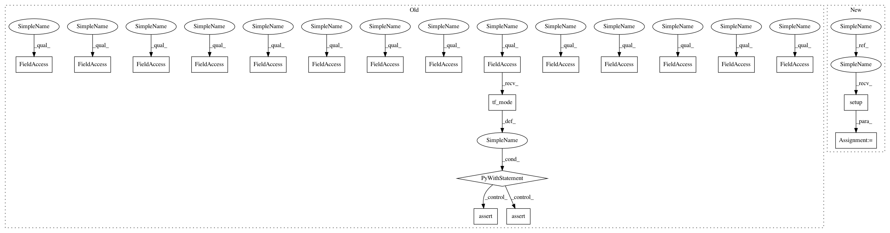

4be9400d3fcdf22592f87969e281490ae51555b2,testing/test_conditionals.py,DiagsTest,test_whiten,#DiagsTest#,52
Before Change
self.chol = tf.transpose(self.chol, perm=[1,2,0])
def test_whiten(self):
with self.test_context() as sess, self.k.tf_mode():
Fstar_mean_1, Fstar_var_1 = gpflow.conditionals.gaussian_gp_predict_whitened(
self.Xs, self.X, self.k, self.mu, self.sqrt, self.num_latent)
Fstar_mean_2, Fstar_var_2 = gpflow.conditionals.gaussian_gp_predict_whitened(
self.Xs, self.X, self.k, self.mu, self.chol, self.num_latent)
mean_diff = sess.run(Fstar_mean_1 - Fstar_mean_2, feed_dict=self.feed_dict)
self.assertTrue(np.allclose(mean_diff, 0))
var_diff = sess.run(Fstar_var_1 - Fstar_var_2, feed_dict=self.feed_dict)
self.assertTrue(np.allclose(var_diff, 0))
def test_nonwhiten(self):
with self.test_context() as sess, self.k.tf_mode():
Fstar_mean_1, Fstar_var_1 = gpflow.conditionals.gaussian_gp_predict(
After Change
chol = tf.transpose(chol, perm=[1, 2, 0])
return Xs, X, k, mu, sqrt, chol, feed_dict
def test_whiten(self):
with self.test_context() as sess:
Xs, X, k, mu, sqrt, chol, feed_dict = self.setup()
Fstar_mean_1, Fstar_var_1 = gpflow.conditionals.conditional(
Xs, X, k, mu, q_sqrt=sqrt)
Fstar_mean_2, Fstar_var_2 = gpflow.conditionals.conditional(
In pattern: SUPERPATTERN
Frequency: 3
Non-data size: 20
Instances
Project Name: GPflow/GPflow
Commit Name: 4be9400d3fcdf22592f87969e281490ae51555b2
Time: 2017-10-29
Author: art.art.v@gmail.com
File Name: testing/test_conditionals.py
Class Name: DiagsTest
Method Name: test_whiten
Project Name: GPflow/GPflow
Commit Name: 4be9400d3fcdf22592f87969e281490ae51555b2
Time: 2017-10-29
Author: art.art.v@gmail.com
File Name: testing/test_conditionals.py
Class Name: DiagsTest
Method Name: test_nonwhiten
Project Name: GPflow/GPflow
Commit Name: 4be9400d3fcdf22592f87969e281490ae51555b2
Time: 2017-10-29
Author: art.art.v@gmail.com
File Name: testing/test_conditionals.py
Class Name: WhitenTest
Method Name: test_whiten